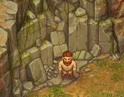
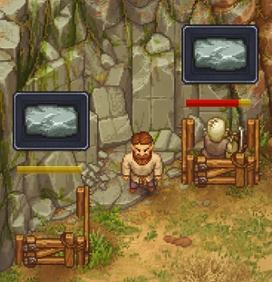

Zombie stone quarry
| Zombie stone quarry | |
|---|---|
 | |
Basic information
| |
Required Technology :
|
Zombie quarrying I |
Related pages :
|
Mining |
Rotatable :
|
No |
Location(s)
| |
| Cabin in the woods, Quarry | |

The zombie stone quarry can be built in the cliffs north of the cabin in the woods. It's also usable manually (see stone quarry), but the zombies don't need any wood wedges for their work.
After unlocking zombie quarrying I, you can build up to two mines: A left and a right variant.
Cost
| Icon | Materials Required | Energy | Notes |
|---|---|---|---|

|
8× Flitch 4× Nails 1× Pickaxe I |
This blueprint is available in two variations: left and right |
Miners


To employ a zombie, walk next to the wooden stand and hit "E" to put it to work. If you want to stop the mine, grab the zombie out of the wooden stand by walking next to it and hit "E" again.
The stone blocks are stored on the stone stockpile near the cabin in the woods. Without this, it won't work. This sign  on the blocks means, that the stockpile is full (or missing) and the work is blocked until some storage space is freed up (or constructed).
on the blocks means, that the stockpile is full (or missing) and the work is blocked until some storage space is freed up (or constructed).
The player is free to mine in the middle between the two stands. Note, that you need wood wedges for this (the zombies don't).
| ||||||||